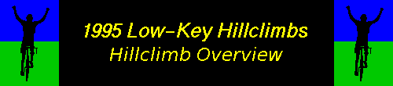

|
index
|
Results
|
Clubs and Categories
|
Rider Feedback
|
NCNCA
|
weather
|
New : |
Series T-shirt
|
San Bruno Hill Climb
|
other Low-Key events
|

Click here to jump to the schedule.
SCHEDULE (linked to results)
Date Hill ref Coordinator
--------- ---------- --- -----------
10/07 Montebello S Kev Winterfield, AV
10/14 Kings Mtn S Kev Winterfield, AV
10/21 Page Mill S Clarke Stanley
10/29 Old La Honda S Clarke Stanley
11/04 Mt Diablo N Valley Spokesmen Racing Team
Ken Hernandez
11/11 Mt Tam N Jeff Bell, AV
11/18 Hwy 9 (E) S Dan Connelly,
Stanford/Wheelsmith
11/23 Mt Hamilton S Turkey Day Annual HillClimb
12/02 Bohlman - Gary Lee, SJBC
12/09 Quimby S Ming Dong, AV
12/16 Henry Coe S Gary Lee, SJBC
(E Dunne Ave)
12/23 Sierra Road S Ming Dong, AV
reference key
-------------
N : road(s) profiled in Roads to Ride, by Peterson
and Anderson; Heyday Books 1984
S : road(s) profiled in Roads to Ride South, by
Peterson and Kluge; Heyday Books 1985
In addition, see Craig Kolb's
SF Bay Area Climbs;
it has information on current
best times and hill profiles.
ORIGINAL RIDE DESCRIPTIONS
 Saturday, October 7, 1995
Saturday, October 7, 1995
LOW-KEY HILLCLIMBS: MONTEBELLO ROAD
distance = 5.2 miles; total climbing = 2020'
This was week one of the "Low-Key" Timed Hillclimb Series. Sign in
from 10:00am-10:15am for a 10:30am start at the Stevens Creek Dam
parking lot off Stevens Creek Road in Cupertino. Ride will be a timed
mass-start event starting from the base of Montebello Road and
finishing at the gate at the end of the pavement. If you're
adventurous, continue on after the finish along the fireroad to the
top of Page Mill Road. All types of riders and/or bikes are welcome.
Rain or snow cancels. Ride leader was Kev Winterfield of Alto Velo
(408-226-4753).
Saturday, October 14, 1995
LOW-KEY HILLCLIMBS: KING'S MOUNTAIN ROAD
distance = 4.2 miles; total climbing = 1570'
This was week two of the "Low-Key" Timed Hillclimb Series. Sign in
from 10:00am-10:15am for a 10:30am start at the old Woodside Store at
the corner of Kings Mountain Road and Tripp Road in Woodside. Ride
will be a timed mass-start event starting from the base of the climb
up Kings Mountain Road and finishing at Skyline. The grade is fairly
steady and averages 7.1%. All types of riders and/or bikes are
welcome. Rain or snow cancels. Ride leader was Kev Winterfield of
Alto Velo (408-226-4753).
Saturday, October 21, 1995
LOW-KEY HILLCLIMBS: PAGE MILL ROAD
distance = 8.7 miles; total climbing = 2130'
This was week three of the "Low-Key" Timed Hillclimb Series. Sign in
from 10:00am-10:15am at the Park and Ride near the intersection of
Page Mill Road and Interstate 280. Ride will be a timed
individual-start event, beginning near the Park and Ride and ending
near Skyline Blvd. All types of riders and/or bikes are welcome.
Don't miss this, the climb to which state masters road-racing champion
Dave Stahl credits his explosive climbing. Rain or snow cancels.
Ride leader was Clarke Stanley (415-854-2031/Clarke100@aol.com).
Saturday, October 28, 1995
LOW-KEY HILLCLIMBS: OLD LA HONDA ROAD
distance = 3.3 miles; total climbing = 1300'
This was week four of the "Low-Key" timed Hillclimb Series. Sign in
from 10:00am-10:15am at the bottom of Old La Honda Road near the
intersection with Portola Valley Road. Parking is not available at
Old La Honda Road; a good option is to park in Woodside or Portola
Valley and ride to Old La Honda Road. Ride will be a timed
individual-start event starting at the bridge and ending at the stop
sign near Skyline. Try to set a personal record on what is the
hillclimbing benchmark in this region. All types of riders and/or
bikes are welcome. Rain or snow cancels. Ride leader was Clarke
Stanley (Clarke100@aol.com/415-854-2031)
Saturday, November 4, 1995
LOW-KEY HILLCLIMBS: MOUNT DIABLO
distance = 11.1 miles; total climbing = 3250'
This was week five of the "Low-Key" timed Hillclimb Series. Sign in
from 10:00am-10:15am for a 10:30am start at the Athenian School
(On South Gate Rd. 1/2K from Diablo Rd). From I-680 take Diablo Rd.
exit East. Follow road until South Gate Rd. DO NOT PARK ON SOUTH
GATE ROAD OR AT ATHENIAN SCHOOL! PARK ON WIDE SECTION OF DIABLO RD.!
The route will climb to the top of South Gate Road, then continue
right up Summit Road to the summit. Ride leader was Ken Hernandez of
the Valley Spokesmen racing team (hernandez7@llnl.gov or
510-423-7187, 8am-4pm). Rain or snow cancels.
Saturday, November 11, 1995
LOW-KEY HILLCLIMBS: MOUNT TAMALPAIS
distance = 8.8 miles; total climbing = 2200'
This was week six of the "Low-Key" timed Hillclimb Series. Sign in at
10am for a 10:30am time-trial-start at the intersection of
Fairfax-Bolinas Road and Highway 1 near Bolinas Bay in Marin. Parking
should be available at Stinson Beach 4 miles to the south on Hwy 1.
The route will climb 1550' in 4.8 miles up Fairfax-Bolinas Road, then
turn right for 4.0 rolling-uphill miles on Ridgecrest Blvd to the
finish just before the parking lot at the intersection of Pan Toll
Road. Climb the extra 400 feet to the summit as warm-down for a
post-ride reward of some stunning views. Ride leader was Jeff Bell
(jbell@digidesign.com), freshly back from Furnace Creek. Rain or snow
cancels.
Saturday, November 18, 1995
LOW-KEY HILLCLIMBS: HIGHWAY 9 (EAST)
distance = 6.8 miles; total climbing = 2090'
This was week seven of the "Low-Key" timed Hillclimb Series. Sign in
near the starting area at 10am for small-group starts beginning at
10:30am. Course is from the bridge just outside of Saratoga to the
"Scenic Route" sign near Skyline Blvd. Frequent mileage markers on
the roadside provide an unwelcome reminder of the pain and suffering
still in store. Heavy rain, snow, sleet, or hale cancels. Ride
leader was Dan Connelly (djconnel@flash.net/415-497-6971).
Thursday, November 23, 1995
LOW-KEY HILLCLIMBS: MOUNT HAMILTON ROAD
distance = 19 miles; total climbing = 4300'
This was week eight of the "Low-Key" timed Hillclimb Series. Sign in
from 9:00am-9:15am for a 9:30am mass start from the intersection of
Alum Rock Avenue and Mount Hamilton Road in San Jose. The finish is
at Lick Observatory on the summit. This is the longest climb in the
series, but the grade is gentle, and there is some intermediate
descending. Rain or snow cancel. Ride leader is Kev Winterfield of
Alto Velo (408-226-4753). This was co-run as the
Alto Velo "Turkey Day" Hillclimb.
Saturday, December 2, 1995
LOW-KEY HILLCLIMBS: BOHLMAN-ON ORBIT-BOHLMAN
distance = 4.3 miles; total climbing = 2030'
This was week nine of the "Low-Key" timed Hillclimb Series. Sign in at
corner of Bohlman Road and Sixth Street (one block south of
intersection of Sixth and Highway 9) in Saratoga by 10am for a 10:30am
individual-time-trial start. Experience levels of pain you didn't
think were possible as you grapple with what may be the most
challenging long climb in the south Bay Area. Bring a low gear...or
walking shoes. Rain or snow cancels. Leader was
Gary Lee (San Jose Bike Club,garylee@hooked.net).
Saturday, December 9, 1995
LOW-KEY HILLCLIMBS: QUIMBY ROAD
distance = 5.0 miles; total climbing = 2000'
This was week ten of the "Low-Key" timed Hillclimb Series. Sign in at
the 7-Eleven near the intersection of Quimby Road and South White Road
in San Jose from 10:00am-10:15am for a 10:30am mass-start. The finish
is just before the short descent towards Quimby's intersection with
Mount Hamilton Road. Quimby starts out gradually, but the grade
continually steepens until the last short stretch provides the coup de
gras. Rain or snow cancels. The sadistic ride leader was Ming Dong
(408-923-8155/ming_dong@netgate.net).
Saturday, December 16, 1995
LOW-KEY HILLCLIMBS: HENRY COE
distance = 6.8 miles; total climbing = 2250'
This was week eleven of the "Low-Key" timed Hillclimb Series. Sign in
by 10am for a 10:30am individual-time-trial start on East Dunne Avenue
in Morgan Hill. Go South on Hiway 101 to E. Dunne Ave., proceed east
on East Dunne over the first hill thru the residental community.
Follow (VERY CAREFULLY) the signs to Henry Coe State Park. Follow the
road to the east side of the resevoir to approximately 1/3 mile past
the bridge. Total distance from 101 will be approximately 4 miles.
Registration closes 30 minutes prior to start of Time Trial. The
finish will be approximately 1/3 mile before the park entrance on a
uphill left hand turn, approximately 1/4 mile following the cattle
guard. Ride leader was Gary Lee of SJBC (garylee@hooked.net). Timing
is by HP.
 Saturday, December 23, 1995
Saturday, December 23, 1995
LOW-KEY HILLCLIMBS: SIERRA ROAD
distance = 5.7 miles; total climbing = 1910'
This was week twelve, the finale, of the "Low-Key" timed Hillclimb
Series. Ride leader Ming Dong (408-923-8155/ming_dong@netgate.net)
wishes you a Merry Christmas with the steady 10%+ grades of Sierra
Road in San Jose. Sign in from 10:00am-10:15am for a 10:30am
mass-start. Rain or snow cancels. All types of bikes are welcome.
Kevin Winterfield kev@VNET.IBM.COM